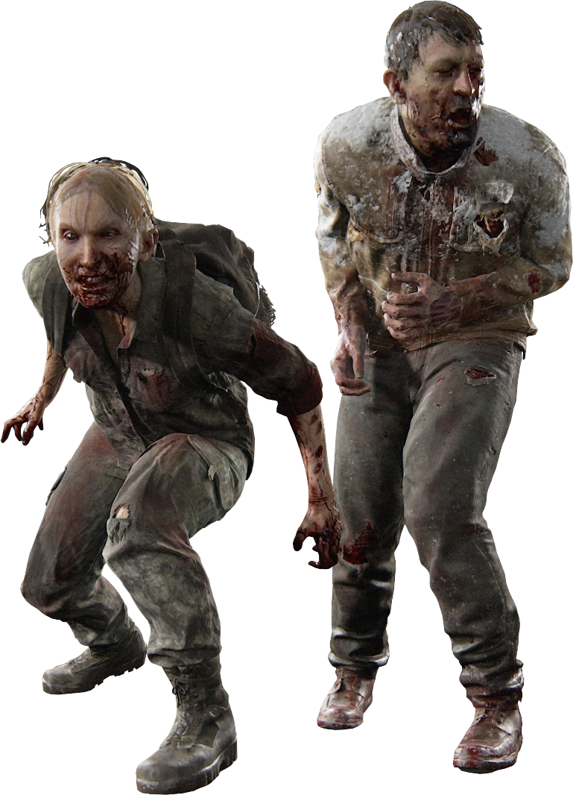
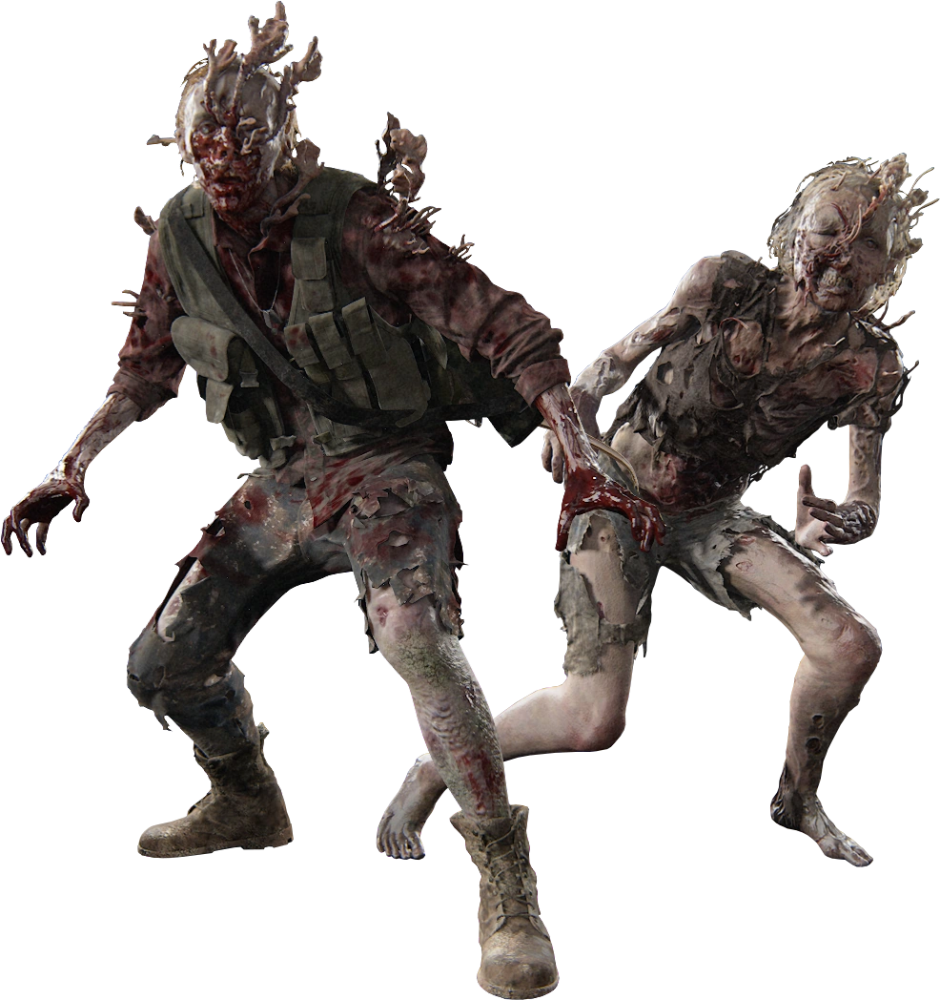
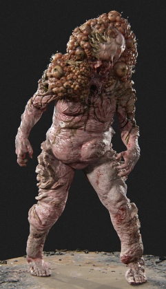

Runner:

<
Runners are people who recently turned into infected. They are defined
by their intense speed, sluggish attacks, and tendency to attack people
in hordes.
Stakler:

Stalkers are people who have been infected from somewhere between two
weeks to a year. Per their name, they stalk and hide from prey in the
dark and attack at opportune moments. Some also latch onto walls and
allow the Cordyceps to fester, keeping the host alive until prey walks
by, at which point the stalker breaks free and attacks.
Clicker:

Clickers are people who have been infected for at least one year. The
long time elapse has allowed the fungus to spread all over their bodies,
blinding them and forcing them to use echolocation to find prey.
However, the fungus has granted them enhanced strength, making them
fearsome foes in close-quarters combat.
Bloater:

Bloaters have been infected for several years. The fungus has led them
to become slow and blind, yet incredibly strong and resilient with the
fungal growth serving as armor plating. Bloaters can also tear fungus
from their bodies to use as spore bombs and throw them at their enemies.
However, this additional fungal growth makes them vulnerable to fire.
Shambler:

Shamblers are people who have been infected for several years and
typically inhabit areas thriving with water. While not as physically
enhanced as clickers or bloaters, shamblers are able to grapple prey and
expel large spore clouds from their bodies, which cause acidic burns on
the skin of prey. When killed, the spores explode, releasing a final
burst of Cordyceps into the air.
Rat King:

The rat king is a unique stage of infected that developed in the Seattle
hospital after over twenty years of infection. Formed from several
infected combining into one, the rat king is colossal in strength and
size, and able to take extensive damage from fire, bombs, and guns. Even
after taking much damage, it does not die, but instead, its various
infected parts will start to break off from the larger mass and attack
along with it.